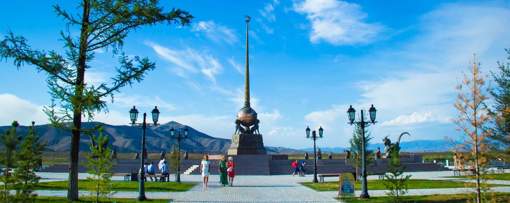
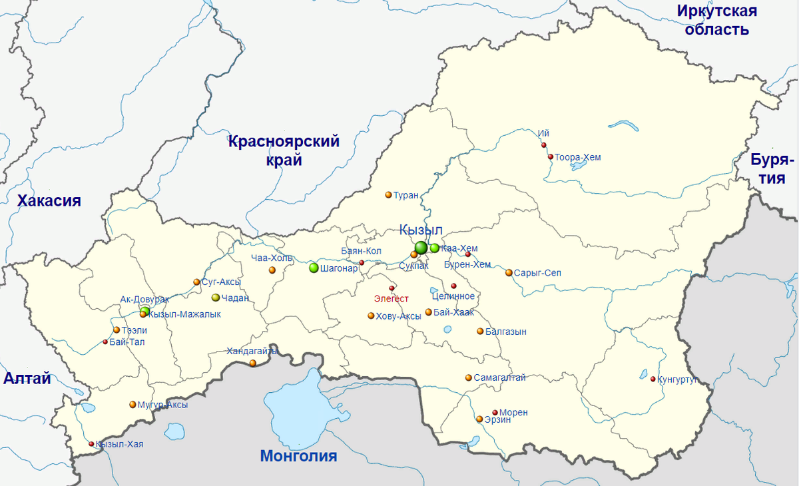
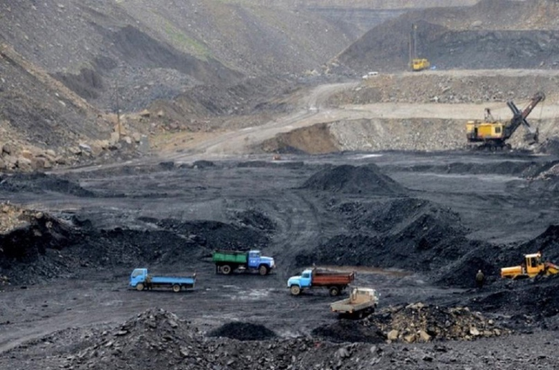
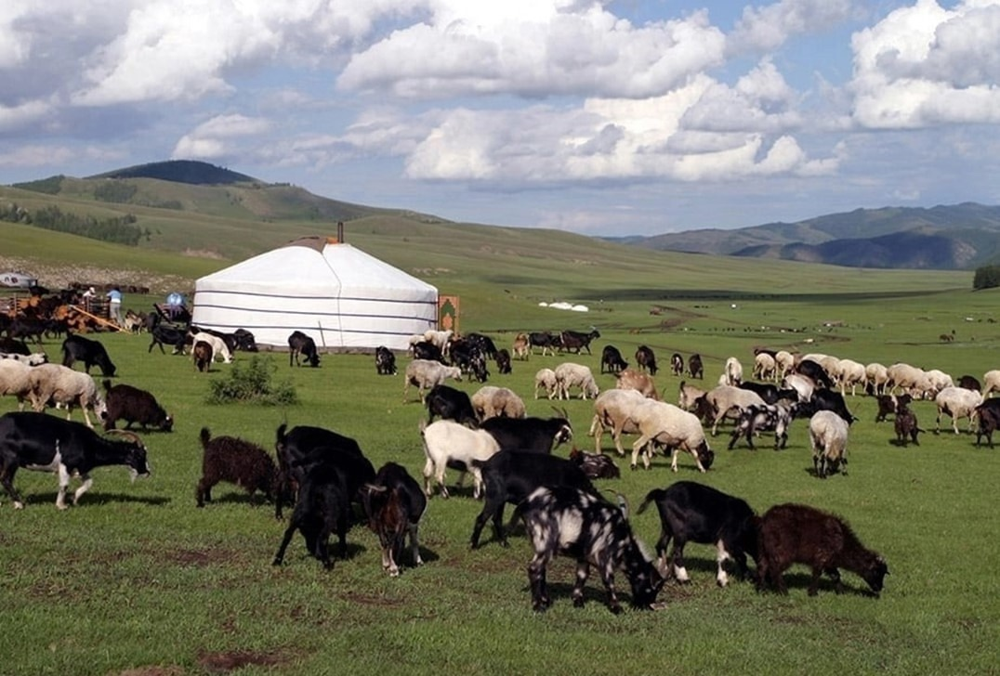

Главная
Республика Тыва — субъект Российской Федерации, расположенный на юге Восточной Сибири, в верховьях Енисея.
Столица — город Кызыл.
Граничит на юге с Монголией, на западе — с Республикой Алтай, на севере — с Хакасией и Красноярским краем, на северо-востоке — с Иркутской областью, на востоке — с Бурятией.
Общая площадь территории — 168 604 км². Климат резко континентальный. Лето умеренно тёплое в горах и жаркое в котловинах. Среднегодовая температура воздуха — −5,5 °C.
Земли региона богаты ископаемыми, поэтому наиболее развита добывающая промышленность: добыча каменного угля, цветных и редкоземельных металлов. Основные отрасли обрабатывающей промышленности — пищевая, лесная, лёгкая промышленность и производство строительных материалов.
В сельском хозяйстве животноводство является ведущей и традиционной отраслью. Наиболее развито мясомолочное скотоводство, овцеводство, коневодство, а также в восточных и южных районах республики разводят северных оленей и верблюдов.
